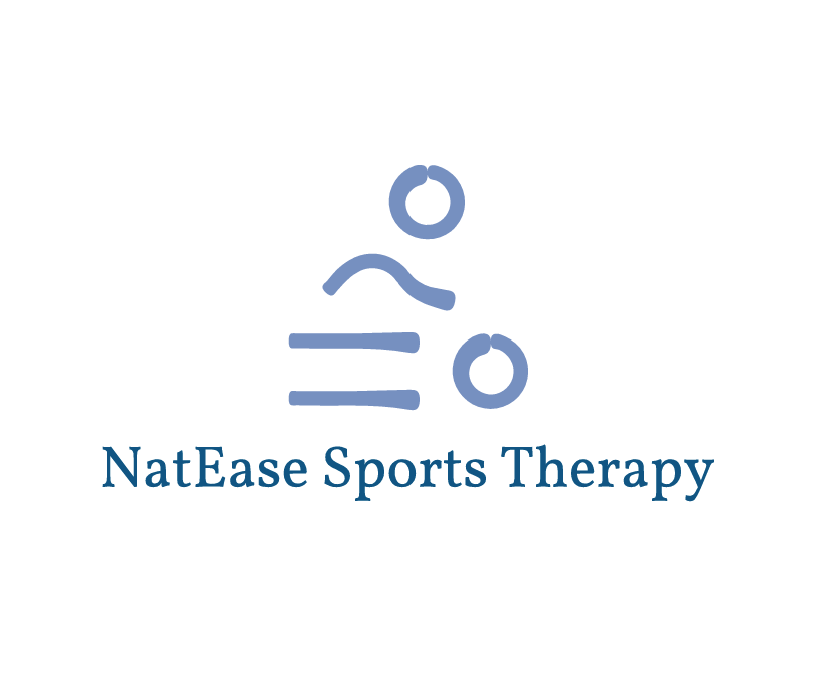
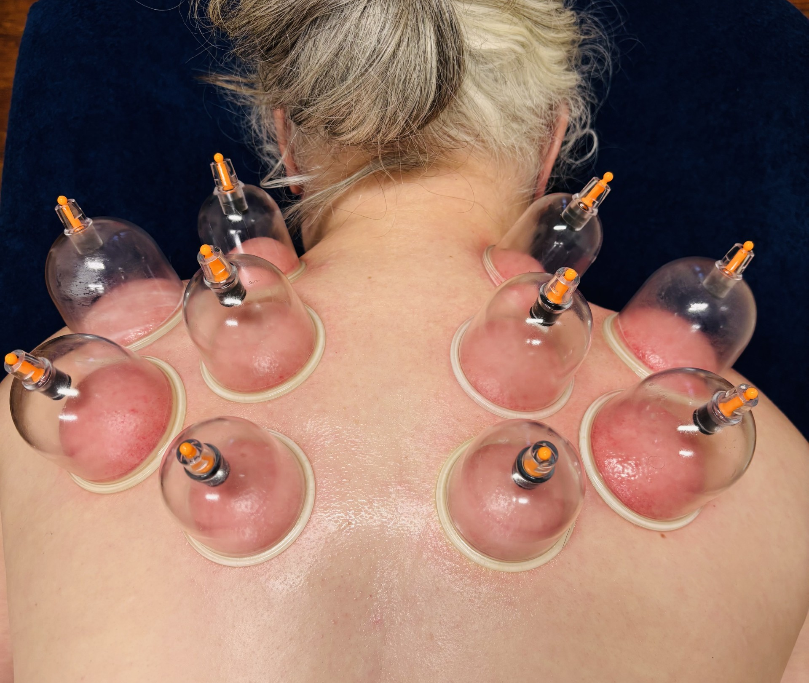

Hi, I’m Nat, an experienced and passionate sports therapist based in Montrose, serving clients across Angus and Tayside. I specialise in personalised, client-focused care. With a Higher National Diploma (HND) in Sports Therapy and currently finalising my BSc (Hons) in Sports Therapy and Rehabilitation, I bring both academic training and real-world experience to every session.
At NatEase Sports Therapy, there’s no one-size-fits-all approach. Every treatment plan is carefully tailored to suit the individual - whether you're recovering from injury, preparing for competition, or simply looking to move more freely.
While I do support active individuals and athletes, many of my clients don’t play sports at all. Aches and pains can come from everyday life - like sitting at a desk all day, lifting heavy loads, or repeating the same movements for hours. I regularly work with care workers, tradesmen, hairdressers and office professionals to help reduce pain and improve mobility.
Alongside my clinic work, I also provide sports therapy support for three local football teams and first aid services for a local rugby team, keeping athletes safe and performing at their best.
Perfect for your first sports therapy visit to NatEase Sports Therapy, this session includes a thorough verbal and physical consultation to understand your concerns and goals. From there, we’ll create a personalised treatment plan tailored to your specific needs.
The session is designed to relieve tension, tightness, pain and improve pre-existing injuries using a variety of techniques. Techniques may include: massage, stretching, soft tissue release, trigger point therapy, deep tissue massage, dry cupping and taping. Post treatment exercises can also be provided to help recovery.This session is designed to build on previous treatments, targeting ongoing issues or new concerns that have arisen. Based on your progress and any updates to your condition, we’ll focus on relieving tension, tightness, pain and improving pre-existing injuries.
We’ll use a combination of techniques, which may include: massage, stretching, soft tissue release, trigger point therapy, deep tissue work, dry cupping and taping. Whether you're continuing your recovery or maintaining your physical health, this tailored treatment will support your goals and help you feel your best. When booking, please select the appropriate appointment duration based on your needs. If you're unsure, feel free to reach out for guidance.Experience ultimate relief with our specialised treatment designed to combat stubborn aches and tightness. This session uniquely incorporates dry cupping techniques alongside massage, stretching, soft-tissue release, trigger-point therapy and deep-tissue work, with an emphasis on alleviating deep-seated muscle tension and enhancing recovery.
Ideal for clients returning to NatEase Sports Therapy, this service addresses ongoing conditions or new injuries, ensuring you feel balanced and relaxed. Whether you seek to relieve persistent discomfort or maintain optimal muscle health, our comprehensive approach is tailored for your needs. Please note that cupping can be an invasive treatment and the service time may be shortened to prevent any adverse effects. In this case, pricing will be adjusted accordingly.A gentle treatment that stimulates natural drainage of the lymph system, a network of organs, vessels and tissues that work together to move fluid (lymph) in your bloodstream. Your lymphatic system protects you from infection, filtering out waste products and maintaining normal fluid levels in your body.
MLD promotes the optimal functioning of the lymphatic system and is a specialist light-touch therapy that stimulates the flow of lymph around the body. MLD helps relax the nervous system, reduces pain and enhances the activity of the immune system. The technique involves gentle, repetitive and smoothing movement of the skin to stimulate the lymphatic vessels compared to traditional massage techniques that work on muscles and soft tissues. It can help conditions such as lymphedema, fibromyalgia, chronic fatigue syndrome, hay fever, stress, headaches, plus many more. PLEASE NOTE I DON’T OFFER THIS THERAPY FOR THOSE THAT HAVE JUST HAD SURGERY
Absolutely buzzing to share that NatEase Sports Therapy has won a Fresha Award!
I’m honestly so grateful for every single client who has booked in, left a review, recommended me to friends or supported my wee business over the last two years. As a small local business, this means a lot. What started as a passion for helping people move better, recover from injury and feel their best has grown into something I’m incredibly proud of - and this award wouldn’t have happened without all of your support. Thank you for trusting me with your recovery, rehab and treatment.
“Another fabulous back treatment from Nat. She certainly has the magic touch! I feel so good I'm going to book my next treatment right now!”
– Susan
“I visit Nat at Natease Sports Therapy regularly. Working in the trades, I often push my body, sometimes neglecting proper lifting techniques just to get the job done. As a result, I frequently end up with muscle strains and nerve-related issues. During my initial consultation, Nat took the time to thoroughly discuss the areas causing me the most problems. She not only developed an effective treatment plan to relieve the tension and pain but also went the extra mile by creating a tailored stretching and exercise routine to help prevent these issues between sessions. Nat is highly professional, knowledgeable, and makes booking appointments at convenient times incredibly easy. I wouldn’t hesitate to recommend her services and have already done so to others. Thanks again Nat! ”
– Kyle
“Felt at ease. Informative. Hit the spot, and felt a difference. Booked my next appointment before leaving.”
– Darren
“Been having back pains for the past week or so and already after one session I feel much better. Highly recommended.”
– Michael
“10/10 again!!! I thought my first visit was good, today was just bloody amazing! Massage and cupping, I feel so loose and light! Thank you so much again 😊.”
– Ross
“First class😊 felt the benefits of it as soon as my sports massage was finished..”
– Allan
“Nat is really welcoming, and explains what she is doing as she goes. It feels really good to have my legs freshened up by massage before a marathon event. Here’s hoping I fly round now!”
– Amanda
“First time I've had manual lymphatic drainage and definitely won't be the last. Nat was so lovely and put me at ease before the treatment which was extremely relaxing and resulted in a great nights sleep! Highly recommend MLT, thank you again Nat!”
– Melissa
“Nat helped with the pain in my neck and shoulders and down my arms. Looking forward to booking again x”
– Linda
“Really great, took time to explain well, and sports massage really helped release my painful calf, feels much better as a result”
– Chris
“Another brilliant session, hitting muscle issues that seem like thay have been there for years. First class service.”
– Brian
“Nat was incredibly informative and her presence is wonderfully calming. She approached everything with such professionalism. My partner recommended her and I will certainly be doing the same. Thank you!”
– Lisa
“Really great sports massage again. I have it as 'pre-hab' for my training and find it very beneficial. Thanks Nat”
– Patrick
“Excellent, relaxed and effective 1st visit. Nat takes her time to understand your physical history and present day situation. The treatment that she delivers is relaxing and effective. I felt loser and more flexible afterwards. If you’re feeling discomfort or tightness as I was I cannot recommend Nat at NatEase highly enough. ”
– David
“I went to Nat with back pain I’d been living with for over 10 years. From the first appointment, Nat took the time to really listen and understand what I’d been experiencing. She carried out a thorough assessment that highlighted areas of stiffness I didn’t even realise were contributing to the problem. It was incredibly insightful. For the first time in years, I’m pain-free!! Nat is incredibly knowledgeable, professional, and genuinely cares about her clients. I’d highly recommend her to anyone experiencing pain, stiffness, or discomfort ”
– Lawrence
Feel free to reach out by phone, email, or through social media.